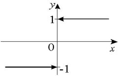

11.3. Односторонние пределы
Число  называется правым
пределом функции
называется правым
пределом функции  в точке
в точке  , если .
, если .
называется правым
пределом функции в точке , если .Эквивалентное определение:
число называется правым
пределом функции в точке , если .
называется правым
пределом функции в точке , если .Обозначение правого предела:
.
Число называется левым
пределом функции в точке , если ,
называется левым
пределом функции в точке , если ,
или
.

Обозначение левого предела: .
, .
Функция имеет предел в
точке , если правый и левый пределы в точке
существуют и равны:
имеет предел в
точке , если правый и левый пределы в точке
существуют и равны:.
Доказательство:
Из определения 11.3.1 следует, что
.
Из определения 11.3.2 следует, что для того же 
.
Возьмем , тогда можно
сказать, что
 ,
,то есть
.